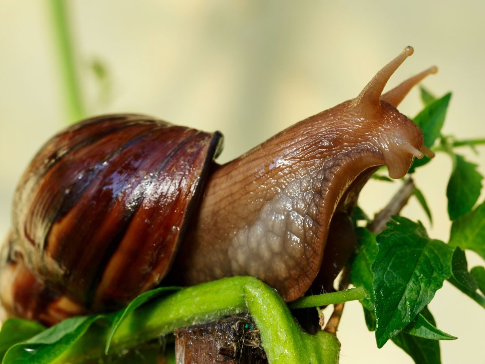
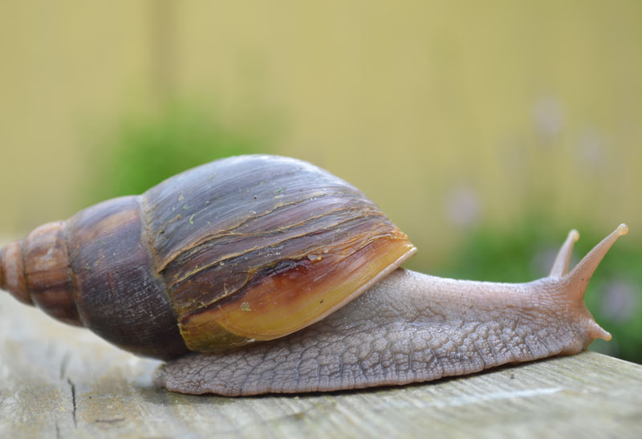
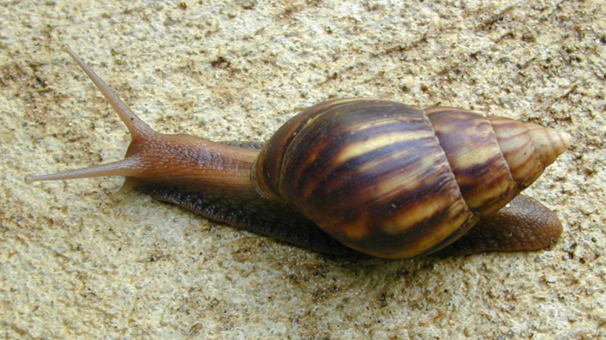

Pochodzenie
Wschodnia Afryka – Tanzania, Kenia
Wielkość
Muszla: 6–12 cm
Cały ślimak: 10–15 cm
Długość życia
4–6 lat
Aktywność
Nocna, w dzień przebywa w podłożu lub pod kryjówkami
Tryb życia
Wilgotne środowiska, powolne tempo wzrostu
Podstawowe informacje o gatunku i warunkach utrzymania

Wschodnia Afryka – Tanzania, Kenia
Muszla: 6–12 cm
Cały ślimak: 10–15 cm
4–6 lat
Nocna, w dzień przebywa w podłożu lub pod kryjówkami
Wilgotne środowiska, powolne tempo wzrostu

21–24°C, krótkotrwale toleruje 18°C
65–80%, lekkie zraszanie co 1–2 dni
Nie wymagane, gatunek nocny
Włókno kokosowe lub torf, wymiana co 3–4 tygodnie
Płytka miska, regularna wymiana
Usuwanie resztek jedzenia codziennie, czyszczenie ścianek

Wapń: sepia, skorupki jaj, kostki wapienne – niezbędne do prawidłowego wzrostu muszli.